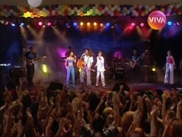
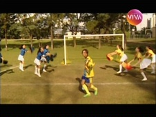
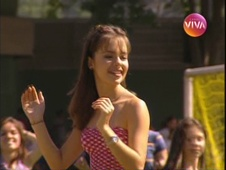
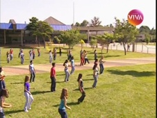
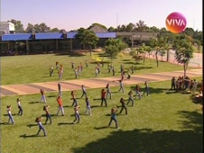

Sandy & Junior
Você encontra a seção de videoclipes logo abaixo do guia de exibição.
| EPISÓDIO | EXIBIÇÃO | REPRISE | |||
|---|---|---|---|---|---|
| 1ª TEMPORADA - ANO 1 - 1999 | |||||
| 001 | 1x01 | "Hoje é Dia de Aula" escrito por Adriana Avellar, Sarah Lavigne e Thiago Marinho direção Paulo Silvestrini e João Camargo |
11/04/1999 | 19/05/2010 | |
| 002 | 1x02 | "O Um Sete Um" escrito por Adriana Avellar, Sarah Lavigne e Thiago Marinho direção Paulo Silvestrini e João Camargo |
18/04/1999 | 20/05/2010 | |
| 003 | 1x03 | "O Festival" escrito por Adriana Avellar, Sarah Lavigne e Thiago Marinho direção Paulo Silvestrini e João Camargo elenco Wandi Doratiotto, Eriberto Leão, Ivan de Almeida e Luis Bacelli |
25/04/1999 | 21/05/2010 | |
| 004 | 1x04 | "A Partida" escrito por Adriana Avellar, Sarah Lavigne e Thiago Marinho direção Paulo Silvestrini e João Camargo elenco Augusto Marin e Bartholomeu di Haro |
02/05/1999 | 24/05/2010 | |
| 005 | 1x05 | "Depois da Tempestade" escrito por Adriana Avellar, Sarah Lavigne e Thiago Marinho direção Paulo Silvestrini e João Camargo elenco Octávio Mendes, Helen Helene, João Bourbonnais, Denis Derkian e Evandro Júnior |
09/05/1999 | 25/05/2010 | |
| 26/05/2010 sem reprise: problemas técnicos | |||||
| 006 | 1x06 | "A Macaca tá Certa" escrito por Adriana Avellar, Sarah Lavigne e Thiago Marinho direção Paulo Silvestrini e João Camargo elenco Cláudio Mamberti, Wellington Nogueira e Denis Derkian |
16/05/1999 | 27/05/2010 | |
| 007 | 1x07 | "Raios e Trovões" escrito por Adriana Avellar, Sarah Lavigne e Thiago Marinho direção Paulo Silvestrini e João Camargo |
23/05/1999 | 28/05/2010 | |
| 008 | 1x08 | "Intriga Internacional" escrito por Maria Carmem Barbosa, Adriana Avellar, Sarah Lavigne e Thiago Marinho direção Paulo Silvestrini e João Camargo elenco Oscar Milano, Alexandre Barros, Fernando Pavão e Danielle Winits |
30/05/1999 | 31/05/2010 | |
| 009 | 1x09 | "Nesta Data Querida" escrito por Maria Carmem Barbosa, Rogério Blat, Sarah Lavigne e Thiago Marinho direção Paulo Silvestrini e João Camargo elenco Luiz Serra |
06/06/1999 | 01/06/2010 | |
| 13/06/1999 sem exibição: Fórmula 1 | |||||
| 010 | 1x10 | "O Sumiço do Porco Dourado" escrito por Maria Carmem Barbosa, Rogério Blat, Sarah Lavigne e Thiago Marinho direção Paulo Silvestrini e João Camargo elenco Grace Gianoukas, Lui Strassburger e Carlos Landucci |
20/06/1999 | 02/06/2010 | |
apresentações e videoclipes
1ª temporada
No Fundo do Coração (#001)
Dig-Dig-Joy (#001)
Golpe Certo (#002)
Com Você (#003)
Chega Mais (#003)
- 
Cade Você Que Não Está (#004)
cover: É Uma Partida de Futebol (#004)
- 
Dig-Dig-Joy (#005)
Little Cowboy (#005)
Era Uma Vez (#006)

Vai Ter Que Rebolar (#006)

Felicidade Como For (#007)
- 
- 
- 
Beijo é Bom (#008)
Em Cada Sonho (#008)
Inesquecível (#009)
Ilusão (#010)